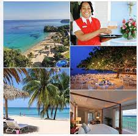
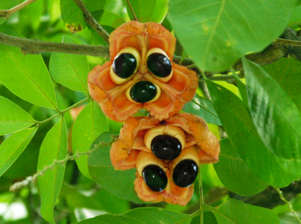

Why visit Jamaica?
Entertainment: Jamaica is the cultural capital of the Caribbean. Visit us to experience live reggae music, street dances, festivals, carnival and much more. Warm Caribbean weather with occasional liquid sunshine makes for an enjoyable holiday

You can learn about the the third largest of the Caribbean islands, and the largest English-speaking island in the Caribbean Sea.
Learn more
Brief history/facts of Jamaica
- Ackee is the national fruit of Jamaica, whilst ackee and saltfish is the official national dish of Jamaica.

- amaican track stars are the fastest runners on earth and it's because of the combination of these factors. The fastest man on the planet, Usain Bolt, is also from Jamaica.
- Jamaica was settled by the Spanish in 1510 and the indigenous Taino people were forced into slavery and eventually exterminated. In the early years of the 16th century the practice of importing slaves from West Africa to work in Jamaica began
- Jamaican language is a wonderful manifestation of the melting pot of cultures that make up this island’s populace. The official language of the island is English, so you’ll have no problems communicating with local people, if that's your native language. The local dialect combines elements of other languages, from Spanish and African dialects, to Irish, British and American phrases
click here to learn more about Jamaica before your visit!